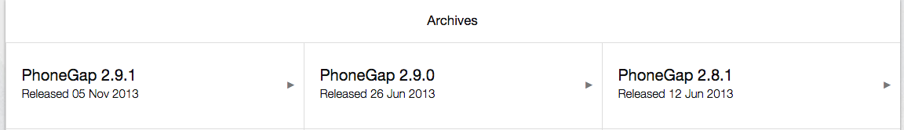

PhoneGap安装
当前版本是PhoneGap2.9.1、Xcode6.3
-
下载PhoneGap
官网地址，NodeJS命令安装老是失败，我是直接下载的zip包解压的。 
-
解压
解压之后的目录是这样的：

iOS的工程创建
-
创建工程（终端命令）
- 首先先建一个文件夹
- 然后
cd /Users/admin/Downloads/phonegap-2.9.1/lib/ios/bin - 创建
./create /Users/admin/Desktop/PlguinDemo com.xxxx.plguin PlguinDemo
-
说明
/Users/admin/Desktop/PlguinDemo为第一步创建的文件夹目录com.xxxx.plguin为项目的Bundle identifierPlguinDemo为项目的包名
-
创建成功
成功之后在先建的文件夹下是这样的：
-
预览
可以直接在终端里运行模拟器进行预览，终端命令如下： -
cd /Users/admin/Desktop/PlguinDemo/cordova- 编译：./build，成功后可看到：** BUILD SUCCEEDED ** - 模拟器运行：./emulate- 运行界面如下：